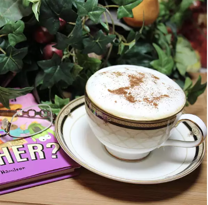

Cafe Latte

Description
This is for all fellow coffee drinkers. I love lattes but buying them can be pricey. So here's a recipe so you can make your own.
Ingredients
- 2 cups milk
- 1 ⅓ cups hot freshly brewed dark roast espresso coffee
Steps:
- Heat milk in a saucepan set over medium-low heat.
- Whisk briskly with a wire whisk to create foam.
- Brew espresso and pour into 4 cups.
- Pour in milk, holding back the foam with a spoon.
- Spoon foam over the top.